사회조사분석사-2급 (2010-07-25 기출문제)
1과목: 조사방법론 I
1. 표본조사와 전수조사에 대한 설명으로 틀린 것은?
- 표본조사 과정에서 발생하는 비표본오류 때문에 표본조사는 전수조사보다 부정확하다.
- 전수조사는 표본조사보다 많은 비용과 시간이 필요로 한다.
- 표본조사는 현실적으로 전수조사가 필요 없거나 불가능할 때 이용한다.
- 모집단이 작은 경우 추정의 정도를 높이는데 전수조사가 훨씬 정밀하다.
(정답률: 70%)

2. 다음 중 우편조사의 회수율을 높이기 위한 방법과 가장 거리가 먼 것은?
- 질문지 발송 후 추가서신을 발송한다.
- 질문지를 발송할 때 기념품을 같이 발송한다.
- 연구 주체와 조사기관을 명확히 제시한다.
- 반송용 봉투에 우표는 물론 응답자의 주소와 성명을 기재해 둔다.
(정답률: 61%)
3. 김치의 상품화로부터 연상될 수 있는 배추, 각종 양념, 숙성 정도, 가격 등과 같은 시험단어들에 대하여 응답자들이 연상해 내는 단어들의 순서와 반응시간 등을 측정하여 조사에 활용되는 방법은?
- 설문지법
- 서베이법
- 투사법
- 면접법
(정답률: 63%)
4. 다음 중 실험설계의 특징이 아닌 것은?
- 실험의 검증력을 극대화시키고자 하는 시도이다.
- 연구가설의 진위여부를 확인하는 구조화된 절차이다.
- 실험의 내적 타당도를 확보하기 위한 노력이다.
- 조작적 상황을 최대한 배제하고 자연적 상황을 유지해야 하는 표준화된 절차이다.
(정답률: 66%)
5. 다음 중 관찰방법의 특징이 아닌 것은?
- 연구대상의 행태에서 발생하는 사회적 맥락까지 포착할 수 있다.
- 사회적 관계에 영향을 미치는 사건을 이해하도록 해준다.
- 객관적 사실에 치중하여 피관찰자의 철학, 세계관은 배제한다.
- 다른 연구와는 비교는 규칙성을 확인시켜 준다.
(정답률: 66%)
6. 다음과 같은 특성을 가진 자료수집방법은?
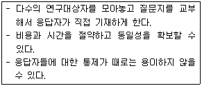
- 면접조사
- 전화조사
- 우편조사
- 집단조사
(정답률: 77%)
7. 다음 중 귀납법과 연역법에 관한 설명으로 옳은 것은?
- 귀납법과 연역법은 상호보완적으로 사용될 수 없다.
- 연역법은 일정한 가설을 설정하기 이전에 필요한 자료를 수집하고 여기서 가설을 구성하는 방법이다.
- 귀납의 세계를 중심으로 하는 귀납법은 현실의 경험 세계에서 출발하고 연역법은 가설이나 명제의 세계에서 출발한다.
- 연역법은 이론을 형성하기 위한 방법이며 귀납법은 일정한 가설을 먼저 설정한 후 이에 필요한 자료를 구하는 방법이다.
(정답률: 64%)
8. 실험설계의 인과관계 분석을 위협하는 요소와 가장 거리가 먼 것은?
- 검사효과
- 사후검사
- 실험대상의 탈락
- 성숙 또는 시간의 경과
(정답률: 63%)
9. 다음의 사례에서 활용한 연구방법은?
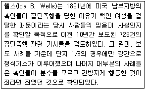
- 내용분석법
- 서베이법
- 투사법
- 종단연구
(정답률: 66%)
10. 다음 중 어느 대학생 개인의 특성에 기초하여 소속대학교 학생집단의 전체 특성으로 규정하려는 분석상의 오류는?
- 환원주의 오류
- 생태학적 오류
- 개인주의적 오류
- 외적 타당성 오류
(정답률: 61%)
11. 면접조사 시 유의해야 할 사항으로 틀린 것은?
- 응답의 내용은 조사자가 해석하여 요약·정리해 둔다.
- 응답자와 친숙한 분위기(rapport)를 형성한다.
- 조사자는 응답자가 이질감을 느끼지 않도록 복장이나 언어사용에 유의한다.
- 조사자는 조사에 임하기 전에 스스로 질문내용에 대해 숙지한다.
(정답률: 69%)
12. 기술적 조사(descriptive research)와 설명적 조사(explanatory research)에 관한 설명으로 틀린 것은?
- 기술적 조사는 물가조사와 국세조사 등 어떤 현상에 대한 탐구와 명백화가 주목적이다.
- 설명적 조사는 두 변수간의 시간적 선행성과는 무관하게 진행되는 경우가 많다.
- 기술적 조사는 관련 상황의 특성 파악, 변수 간에 상관관계 파악 및 상황변화에 대한 각 변수간의 반응을 예측할 수 있다.
- 설명적 조사연구를 수행하기 위해서는 변수의 수가 둘 또는 그 이상이 되는 경우가 많다.
(정답률: 54%)
13. 가설설정시 유의해야 할 사항과 가장 거리가 먼 것은?
- 가설의 조작적 정의는 추상적인 성질을 가진다.
- 가설은 항상 실증적으로 검증 가능해야 한다.
- 가설은 가치중립적인 성질을 띠어야 한다.
- 가설은 구체적인 성질의 것이어야 하며, 그 뜻이 명쾌하여야 한다.
(정답률: 54%)
14. “최근 텔레비전 프로그램에 등장하고 있는 폭력적 장면과 선정적 장면에 대해서 어떻게 생각하십니까?” 라는 질문은 주로 어떤 오류를 범하고 있는가?
- 부적절한 언어의 사용
- 비윤리적 질문
- 전문용어의 사용
- 이중적 질문
(정답률: 70%)
15. 관찰을 통한 자료수집 시 지각과정에서 나타나는 오류를 감소하기 위한 방안으로 틀린 것은?
- 객관적인 관찰도구를 사용한다.
- 보다 큰 단위의 관찰을 한다.
- 가능한 한 관찰단위를 명세화해야 한다.
- 관찰기간을 될 수 있는 한 길게 잡는다.
(정답률: 61%)
16. 설문조사의 질문항목 배치에 대한 설명으로 틀린 것은?
- 민감한 질문이나 주관식 질문은 가능한 한 앞에 배치한다.
- 서로 연결되는 질문은 적합한 순서대로 배치한다.
- 질문은 논리적인 순서에 따라 배열함으로써 응답자 자신도 조사의 의미를 찾을 수 있도록 한다.
- 비슷한 형태로 질문을 계속하면 응답에 정형이 발생되기 때문에 이를 피하도록 한다.
(정답률: 71%)
17. 다음 중 조사자의 주관이 개입될 가능성이 가장 높은 자료수집방법은?
- 면접조사
- 온라인조사
- 우편조사
- 전화조사
(정답률: 63%)
18. 다음 중 온라인(On-line) 조사의 장점과 가장 거리가 먼 것은?
- 시각적 자료를 활용할 수 있다.
- 민감한 주제를 다룰 수 있다.
- 응답자가 광범위하여 표본의 대표성을 확보할 수 있다.
- 조사비용을 절감할 수 있다.
(정답률: 63%)
19. 다음 중 폐쇄형 질문의 단점과 가장 거리 먼 것은?
- 질문과 응답의 유형이 정해져 있어 면접자들이 조사현장에서 질문하고자 하는 내용을 임의로 바꿀 수가 없다.
- 응답자들이 말하고자 하는 내용을 보다 구체적으로 도출해 낼 수가 없다.
- 개별 응답자들의 특색 있는 응답내용을 보다 생생하게 기록해 낼 수가 없다.
- 각각 다른 내용의 응답이라도 미리 제시된 응답 항목이 한가지로 제한되어 있는 경우 동일한 응답으로 잘못 처리될 위험성이 있다.
(정답률: 49%)
20. 관찰법(observation method)의 분류기준에 관한 설명으로 틀린 것은?
- 관찰이 일어나는 상황이 인공적인지 여부에 따라 자연적/ 인위적 관찰로 나누어진다.
- 피관찰자가 관찰사실을 알고 있는가 여부에 따라 공개적/ 비공개적 관찰로 나누어진다.
- 관찰시기가 행동발생과 일치하는가 여부에 따라 체계적/ 비체계적 관찰로 나누어진다.
- 관찰주체 또는 도구가 무엇인가에 따라 인간의 직접적/ 기계를 이용한 관찰로 나누어진다.
(정답률: 60%)
21. 다음 중 전화조사의 장점과 가장 거리가 먼 것은?
- 다른 조사에 비해 시간과 비용을 절약할 수 있다.
- 자유응답형 질문으로 심층적인 정보를 얻을 수 있다.
- 조사자들에 대한 감독이 용이하다.
- 조사대상자에 대한 접근이 용이하다.
(정답률: 40%)
22. 다음 중 집합단위의 자료를 바탕으로 개인의 특성을 추리할 때 저지를 수 있는 오류를 뜻하는 것은?
- 개인주의적 오류(individualistic fallacy)
- 일반화 오류(generalization fallacy)
- 의도적 오류(intentional fallacy)
- 생태학적 오류(ecological fallacy)
(정답률: 61%)
23. 소수의 집단을 대상으로 특정주제에 대하여 자유롭게 토론하여 필요한 정보를 얻는 방법을 무엇이라 하는가?
- 집단조사법
- 표본집단면접법
- 대인면접법
- 사례조사법
(정답률: 63%)
24. 조사하려고 하는 문제에 대한 잠정적 해답 또는 경험적으로 실증되지 않는 명제는?
- 패러다임(paradigm)
- 가설(hypothesis)
- 법(law)
- 이론(theory)
(정답률: 65%)
25. 동시경험집단을 연구하는 것으로 일정한 기간 동안에 어떤 한정된 부분의 모집단을 연구하는 것은?
- 추세 연구(trend study)
- 코호트 연구(cohort study)
- 패널 연구(panel study)
- 사례 연구(case study)
(정답률: 50%)
26. 양적연구와 질적연구에 대한 설명으로 틀린 것은?
- 양적연구는 연구대상의 관계를 통계적으로 분석을 통하여 밝히는 연구이다.
- 질적연구는 강제적 측정과 통제된 측정을 이용하는 방법이다.
- 질적연구는 주관적·해석적 연구방법이다.
- 양적연구는 확인 지향적 또는 확증적 연구방법이다.
(정답률: 58%)
27. 다음 중 표준화면접의 사용이 가장 적합한 경우는?
- 새로운 사실을 발견하고자 할 때
- 정확하고 체계적인 자료를 얻고자 할 때
- 피면접자로 하여금 자유연상을 하게 할 때
- 보다 융통성있는 면접분위기를 유도하고자 할 때
(정답률: 68%)
28. 사후실험설계(ex-post facto research design)의 특징으로 틀린 것은?
- 가설의 실제적 가치 및 현실성을 높일 수 있다.
- 순수실험설계에 비하여 변수들간의 인과관계를 명확히 밝힐 수 있다.
- 분석 및 해석에 있어 편파적이거나 근시안적 관점에서 벗어날 수 있다.
- 조사의 과정 및 결과가 객관적이며 조사를 위해 투입되는 시간 및 비용을 줄일 수 있다.
(정답률: 55%)
29. 집단조사법에 관한 설명으로 틀린 것은?
- 조사가 간편하여 시간과 비용을 절약할 수 있다.
- 조사조건을 표본화하여 응답조건이 동등해 진다.
- 응답자의 통제가 용이하여, 타인의 영향을 배제할 수 있다.
- 응답자들을 동시에 직접 대화할 기회가 있어 질문에 대한 오류를 줄일 수 있다.
(정답률: 64%)
30. 다음 중 내용분석에 관한 설명을 틀린 것은?
- 시간과 비용 측면에서의 경제성이 있다.
- 연구 진행 중에 연구계획의 부분적인 수정이 가능하다.
- 일정기간 동안 진행되는 과정에 대한 분석이 용이하다.
- 분석대상에 영향을 미친다.
(정답률: 64%)
2과목: 조사방법론 II
31. 온도계의 눈금을 나타내는 수치는 어느 척도인가?
- 명목척도
- 서열척도
- 비율척도
- 등간척도
(정답률: 68%)
32. 우리는 사회조사를 실시할 때 종종 여러 문항으로 이루어진 척도를 만든다. 다음 중 척도를 만드는 이유가 아닌 것은?
- 척도는 측정의 신뢰도를 높여주기 때문이다.
- 단일문항의 불안정성을 줄일 수 있기 때문이다.
- 한 문항으로 한 개념을 쉽게 측정할 수 없는 경우가 많기 때문이다.
- 일반적으로 단일문항으로 측정하는 것이 여러 문항으로 측정하는 것보다 측정 오차가 더 작기 때문이다.
(정답률: 63%)
33. 표집틀(sampling frame)을 평가하는 주요요소와 가장 거리가 먼 것은?
- 포괄성
- 안정성
- 추출확률
- 일반성
(정답률: 49%)
34. 신뢰도는 과학적 연구의 요건 중 어느 것과 가장 관련이 깊은가?
- 논리성
- 검증가능성
- 반복가능성
- 일반성
(정답률: 61%)
35. 다음은 어떤 척도에 관한 설명인가?
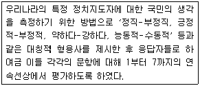
- 서스톤척도
- 거트만척도
- 리커트척도
- 의미분화척도
(정답률: 60%)
36. 개념적 정의와 조작적 정의에 관한 설명으로 틀린 것은?
- 개념적 정의는 추상적 수준의 정의이다.
- 조작적 정의는 인위적이기 때문에 가능한 한 피해야 한다.
- 개념적 정의와 조작적 정의가 반드시 일치하는 것은 아니다.
- 조작적 정의는 측정을 위해서 불가피하다.
(정답률: 55%)
37. 할당표본추출법(quota sampling)에 관한 설명으로 틀린 것은?
- 모집단이 갖는 특성의 비율에 맞추어 표본을 추출하는 방법이다.
- 선거와 관련된 조사나 일반적인 여론조사에서 많이 활용되고 있다.
- 명확한 표본 프레임이 없어도 사용할 수 있다.
- 표본추출과정에서 조사자의 편견이 개재될 수 있는 여지가 없다.
(정답률: 54%)
38. 2년제 대학의 대학생 집단을 학년과 성별, 계열별(인문계, 자연계, 예체능계)로 구분하여 할당표본추출을 할 경우 할당표는 총 몇 개의 범주로 구분되는가?
- 3개
- 5개
- 12개
- 24개
(정답률: 70%)
39. 다음 3가지의 변수가 다음과 같은 순서로 영향을 미칠 때 사회적 통합을 무슨 변수라고 하는가?
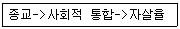
- 외적변수
- 매개변수
- 구성변수
- 선행변수
(정답률: 66%)
40. 각 대학교의 졸업생들을 중심으로 취업률을 조사하였을 때 그 척도에 대한 설명으로 맞는 것은?
- 수학적 계산이 불가능하다.
- 덧셈과 뺄셈만이 가능하다.
- 곱셈과 나눗셈만이 가능하다.
- 덧셈, 뺄셈, 곱셈, 나눗셈 모두 가능하다.
(정답률: 72%)
41. 표본추출과정을 바르게 나열한 것은?
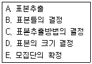
- E→C→D→B→A
- E→B→C→D→A
- E→D→B→C→A
- E→C→B→D→A
(정답률: 57%)
42. 어느 교사가 50문항으로 구성된 독해력을 측정하기 위한 질문지를 만들었다. 자료수집 후 확인해 본 결과 10개의 문항은 독해력이 아닌 어휘력을 측정하는 것으로 나타났다. 따라서 이 10개의 문항을 제외하고 40문항으로 질문지를 재구성하였다. 이 교사는 어떤 결과를 기대할 수 있겠는가?
- 신뢰도를 저하시키고 타당도를 증가시킬 것이다.
- 신뢰도를 증가시키고 타당도를 저하시킬 것이다.
- 신뢰도와 타당도 모두를 증가시킬 것이다.
- 신뢰도와 타당도 모두를 저하시킬 것이다.
(정답률: 49%)
43. 다음 사례의 표본추출방법은?
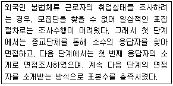
- 할당표집(quota sampling)
- 유의표집(purposive sampling)
- 편의표집(convenience sampling)
- 눈덩이표집(snowball sampling)
(정답률: 70%)
44. 척도를 구성하는 가장 중요한 이유는?
- 표면 타당도를 향상시키기 위해
- 외적 타당도를 향상시키기 위해
- 내적 타당도를 향상시키기 위해
- 하나의 문항에서 연유될 수 있는 왜곡된 측정을 막기 위해
(정답률: 46%)
45. 타당성 중에서 연구자가 설계한 측정도구 자체가 측정하려는 개념이나 속성을 제대로 대표하고 있는지 여부를 나타내는 것은?
- 구성타당성(construct validity)
- 내용타당성(content validity)
- 경험적 타당성(empirical validity)
- 개념적 타당성(concept validity)
(정답률: 44%)
46. 척도구성에서 척도의 일부를 이루는 개별문항들에 대한 기본적인 가정은?
- 개별문항은 양적 속성을 가지지만, 그것은 결국 질적 속성으로 변환될 수 있어야 한다.
- 개별문항은 다차원적이어야 하며, 이들이 논리적으로나 경험적으로 연결된 다수의 개념을 반영하여야 한다.
- 개별문항은 하나의 연속체를 이루어야 하며, 이 연속체는 단 하나의 개념을 반영하여야 한다.
- 개별문항은 둘 이상의 개념을 별도로 점수화하는데 적합하여야 하며, 이들 개념은 통계적으로 조작이 불가능한 질적 개념이어야 한다.
(정답률: 49%)
47. 다음 중 소시오메트리 척도에 관한 설명으로 틀린 것은?
- 집단결속력의 정도를 저울질하는데 사용된다.
- 조사대상인원이 소수일 때 적용이 용이하다.
- 통계학에서 다루는 조합의 원리가 적용된다.
- 조사대상집단 구성원 모두 동질성을 띠어야 한다.
(정답률: 60%)
48. 다음 중 표집오차가 문제되는 표집방법은?
- 할당표집(quota sampling)
- 유의표집(purposive sampling)
- 눈덩이표집(snowball sampling)
- 단순무작위표집(simple random sampling)
(정답률: 57%)
49. 실험에서 인과관계를 추론하기 위해서 서로 다른 값을 갖도록 처치를 하는 변수를 무엇이라고 하는가?
- 외적변수(extraneous variable)
- 종속변수(dependent variable)
- 매개변수(intervening variable)
- 독립변수(independent variable)
(정답률: 63%)
50. 표본추출의 대표성에 관한 설명으로 틀린 것은?
- 대표성의 문제란 표본이 모집단을 대표하여 일반화가 가능한 것인가의 문제이다.
- 표본추출에는 우연성이 많아야 대표성이 확보된다.
- 표본은 모집단과 변수의 특성이 유사한 분포를 갖도록 추출되어야 한다.
- 조사에 있어 어떤 것이 중요한 가설인가에 따라 대표성이 달라진다.
(정답률: 72%)
51. 다음 중 기준관련타당도(criterion-related validity)(문제 오류로 복원중입니다., 정확한 내용을 아시는 분 께서는 오류 신고를 통하여 내용 작성 부탁 드립니다.)
- 동시적 타당도
- 예측적 타당도
- 경험적 타당도
- 이론적 타당도
(정답률: 47%)
52. 측정에서 확률오차(혹은 비체계적 오차)와 체계오차를 신뢰도와 타당도의 개념과 연결시켜 생각할 때, 타당도는 높으나 신뢰도가 낮은 경우는 어디에 해당하는가?
- 확률오차가 작고 체계오차가 작을 경우
- 확률오차가 크고 체계오차가 작을 경우
- 확률오차가 작고 체계오차가 클 경우
- 확률오차가 크고 체계오차가 클 경우
(정답률: 51%)
53. 동일한 상황에서 동일한 측정도구를 사용하여 동일한 대상을 일정한 간격을 두고 두 번 이상 측정하여 그 결과를 비교하여 신뢰성을 측정하는 방법은?
- 재검사법(test-retest method)
- 복수양식법(parallel-forms technique)
- 반분법(split-half method)
- 내적일관성법(internal consistency method)
(정답률: 67%)
54. 표집오차(sampling error)에 대한 설명으로 틀린 것은?
- 일반적으로 표본의 크기가 클수록 표집오차는 작아진다.
- 일반적으로 표본의 분산이 작을수록 표집오차는 작아진다.
- 표본의 크기가 같을 경우 할당표집에서보다 층화표집의 경우 표집오차가 더 크다.
- 표본의 크기가 같을 경우 단순무작위표집에서보다 집락표집의 경우 표집오차가 더 크다.
(정답률: 52%)
55. 다음에 나타나는 측정상의 문제점은?
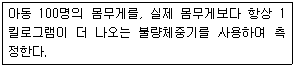
- 타당성이 없다.
- 대표성이 없다.
- 안정성이 없다.
- 일관성이 없다.
(정답률: 69%)
56. 다음 중 비확률표본추출방법(non-probability sampling)에 해당하지 않는 것은?
- 불비례 층화표본추출법(disproportionate stratified sampling)
- 편의표본추출법(convenience sampling)
- 할당표본추출법(quota sampling)
- 판단표본추출법(judgment sampling)
(정답률: 70%)
57. 측정하고자 하는 것을 얼마나 정확히 측정했는가에 관한 것은?
- 신뢰도
- 타당도
- 정밀도
- 판별도
(정답률: 60%)
58. 표본추출과 관계없이 자료를 수집하는 과정에서 발생하는 오차는?
- 표본프레임 오차
- 비표본오차
- 표준오차
- 확률적인 오차
(정답률: 69%)
59. 다음 중 비율척도로 측정하기 어려운 것은?
- 각 나라의 평균 기온
- 각 나라의 일인당 평균 소득
- 각 나라의 일인당 교육 년수
- 각 나라의 국방 예산
(정답률: 61%)
60. 외적 타당도를 저해하는 요소에 관한 설명이 아닌 것은?
- 측정도구나 관찰자에 따라 측정이 달라질 수 있다.
- 측정 자체가 실험대상자들의 행동을 변화시킬 수 있다.
- 실험대상자 선정에서 오는 편향과 독립변수 간에 상호작용이 있을 수 있다.
- 연구의 결과가 일반화될 수 있는가의 여부는 표집뿐만 아니라 생태학적 상황에 의해서도 결정될 수 있다.
(정답률: 34%)
3과목: 사회통계
61. 독립인 두 개의 정규분포 n(120, 64) 및 n(100, 36)에서 각각 50개의 표본을 추출하여 그 표본평균을 각각
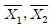
이라 할 때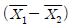
의 분포는?- 평균과 분산이 각각 20과 2인 정규분포
- 평균과 분산이 각각 20과 20인 정규분포
- 평균과 분산이 각각 120과 40인 정규분포
- 평균과 분산이 각각 120과 60인 정규분포
(정답률: 34%)
62. A성형치과협회에 의하여 성인의 90%는 매력적이지 못한 미소는 직업적 성공을 저해한다고 믿는다. 25명의 성인을 임의로 선택했다고 하자. 이들 중에서 정확하게 20명이 이와 같은 주장에 정확하게 동의할 확률은?
- 0.0646
- 0.9766
- 0.9282
- 0.0234
(정답률: 15%)
63. 불량률이 0.⑤인 제품을 20개씩 한 box에 넣어서 포장하였다. 10개의 box를 구입했을 때, 기대되는 불량품의 총 개수는?
- 1개
- 5개
- 10개
- 15개
(정답률: 49%)
64. 세 집단의 평균이 서로 같은지 다른지를 검정하기 위하여 각 집단에서 크기가 6, 7, 11인 표본을 각각 추출하였다. 이 때, 작성되는 분산분석표의 평균오차 제곱합(MSE)의 자유도는?
- 23
- 21
- 20
- 19
(정답률: 37%)
65. 두 집단 자료의 단위가 다르거나 단위는 같지만 평균의 차이가 클 때 두 집단 자료의 산포를 비교하는데 변동계수(coefficient of variation)를 사용한다. 얻은 자료의 산술평균이 20이고 분산이 16일 때 변동계수는 얼마인가?
- 4/20
- 16/20
- 20/4
- 20/16
(정답률: 35%)
66. 다음 설명 중 옳은 것은?
- 신뢰구간은 넓을수록 바람직하다.
- 검정력은 작을수록 바람직하다.
- 표본의 수는 통계적 추론에는 영향을 미치지 않는 표본조사시의 문제이다.
- 모든 조건이 똑같다면 표본의 수가 클수록 신뢰구간의 길이는 작아진다.
(정답률: 41%)
67. 상관계수
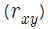
에 대한 설명으로 틀린 것은?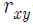
는 두 변수 X와 Y의 산포의 정도를 나타낸다.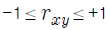
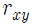
=0이면 두 변수는 선형이 아니거나 무상관이다.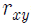
=-1이면 두 변수는 완전상관관계에 있다.
(정답률: 34%)
68. 다음 중 회귀분석에 관한 설명을 틀린 것은?
- 회귀분석은 종속변수의 값 변화에 영향을 미치는 중요한 독립변수들이 무엇인지 알 수 있다.
- 회귀분석에서 종속변수와 독립변수는 양적변수 또는 연속형 변수이어야 한다.
- 단순회귀선형모형의 오차(
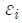
)에 대한 가정에서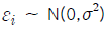
이며, 오차는 서로 독립이다. - 최소자승법은 회귀모형의 절편과 기울기를 구하는 방법으로 잔차의 합을 최소화시킨다.
(정답률: 27%)
69. 다음은 5년 동안 연도별로 실현된 투자수익률이다. 다음 중 5년 동안의 연평균 수익률을 가장 잘 나타낸 것은?(단, 수익률은 소수 3째 자리에서 반올림)
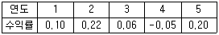
- 산술평균=0.106
- 산술평균=0.102
- 기하평균=0.106
- 기하평균=0.102
(정답률: 22%)
70. 어느 회사에 출퇴근하는 직원들 500명을 대상으로 이용하는 교통수단을 지하철, 자가용, 버스, 택시, 자하철과 택시, 지하철과 버스, 기타의 분야로 나누어 조사하였다. 이 자료를 정리하기에 적합하지 않은 것은?
- 도수분포표
- 막대그래프
- 원형그래프
- 히스토그램
(정답률: 37%)
71. 어느 회사의 마케팅부장은 제품 X에 대한 구매의사를 조사하였다. 남자 40명 여자 60명 모두 100명을 상대로 조사한 결과, 구매의사를 밝힌 남자는 20%이고 여자는 50%였다. 100명 중에서 임의로 한 사람을 뽑았을 때 여자인 조건 하에서 구매에 찬성할 확률은?
- 0.4
- 0.5
- 0.6
- 0.8
(정답률: 28%)
72. 모집단 회귀계수 β에 대한 표본 회귀계수가 0.23일 경우, 독립변수가 종속변수에 의미있는 영향을 미치는지를 알기 위해 모집단 회귀계수에 대해 가설검정하려고 할 때 귀무가설과 대립가설은?
- 귀무가설 β=0, 대립가설 β≠0
- 귀무가설 β≠0, 대립가설 β=0
- 귀무가설 β=0.23, 대립가설 β≠0.23
- 귀무가설 β≠0.23, 대립가설 β=0.23
(정답률: 27%)
73. 3개의 처리(treatment)를 각각 5번씩 반복하여 실험하였고, 이에 대해 분산 분석을 실시하고자 할 때의 설명으로 틀린 것은?
- 분산분석표에서 오차의 자유도는 12이다.
- 분산 분석의 영가설(H0)은 3개의 처리간 분산이 모두 동일하다고 설정한다.
- 유의수준 0.⑤하에서 계산된 F-비 값은 F(0.⑤, 2, 12) 분포값과 비교하여, 영가설의 기각여부를 결정한다.
- 처리 평균제곱은 처리 제곱합을 처리 자유도로 나눈 것을 말한다.
(정답률: 17%)
74. 평균이 μ이고 분산은  인 정규모집단에서 모평균μ를 추정하기 위해서 크기 3인 확률표본 X1, X2, X3를 추출하였다. 두 추정량
인 정규모집단에서 모평균μ를 추정하기 위해서 크기 3인 확률표본 X1, X2, X3를 추출하였다. 두 추정량
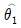
=(X1+X2+X3)/3 과 = (2X1+5X2+3X3)/10 에 대한 설명으로 옳은 것은?
= (2X1+5X2+3X3)/10 에 대한 설명으로 옳은 것은? 은 불편추정량이고,
은 불편추정량이고,  는 편향추정량이다.
는 편향추정량이다. 은 일치추정량이고,
은 일치추정량이고,  는 유효추정량이다.
는 유효추정량이다. 은 유효추정량이고,
은 유효추정량이고, 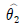
는 불편추정량이다. 는 유효추정량이고,
는 유효추정량이고, 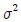
은 편향추정량이다.
(정답률: 31%)
75. 모분산이 25인 정규모집단에서 추출한 표본평균(
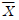
)을 가지고 모평균(μ)을 추정하되 최대오차가 2를 넘지 않을 확률이 99%인 신뢰구간을 찾으려면 표본크기는 최소한 얼마가 되어야 하는가?(단, Z= 2.575, 99% 신뢰구간)- 30
- 40
- 42
- 51
(정답률: 30%)
76. 다음 중 Type1 오류가 발생하는 경우는?
- 진실이 아닌 귀무가설(H0)을 기각하지 않았을 경우
- 진실인 귀무가설(H0)을 기각하지 않았을 경우
- 진실이 아닌 귀무가설(H0)을 기각하게 될 경우
- 진실인 귀무가설(H0)을 기각하게 될 경우
(정답률: 40%)
77. 다음 설명 중 틀린 것은?
- 제1종 오류는 귀무가설이 사실일 때 귀무가설을 기각하는 오류이다.
- 양측검정은 통계량의 변화방향에는 관계없이 실시하는 검정이다.
- 가설검정에서 유의수준이란 제1종 오류를 범할 때 최대허용오차이다.
- 유의수준을 감소시키면 제2종 오류의 확률 역시 감소한다.
(정답률: 52%)
78. 평균체중이 65kg이고 표준편차가 4kg인 C고등학교 1학년 학생들에서 임의로 뽑은 크기 100명 학생들의 평균체중
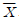
의 표준오차는?- 0.04kg
- 0.4kg
- 4kg
- 65kg
(정답률: 40%)
79. “성과 정당지지도 사이에 관계가 있는가?”를 살펴보기 위하여 설문조사를 실시, 분석한 결과 Pearson 카이제곱값이 32.29, 자유도가 2, 유의확률이 0.000이었다. 이 분석에 근거할 때, 유의수준 0.⑤에서 “성과 정당지지도 사이의 관계”에 대한 결론은?
- 위에 제시한 통계량으로는 성과 정당지지도 사이의 관계를 알 수 없다.
- 성과 정당지지도 사이에 유의미한 관계가 있다.
- 성과 정당지지도 사이에 유의미한 관계가 없다.
- 정당의 종류는 2가지 이다.
(정답률: 43%)
80. 어떤 교수는 수업시간에 학급에서 상위 15% 이내가 되면 A학점을 주게 될 것이라고 선언했다. 최종적으로 확인된 평균시험점수는 83점이었고, 표준편차는 6점이었다. 이 학급에서 학생들이 A학점을 받기 위해서는 최소한 몇 점 정도가 되어야 하는가? (단, 15%에 해당하는 Z점수는 1.03~1.04이다.)
- 86점
- 90점
- 94점
- 98점
(정답률: 35%)
81. 동전을 3회 던지는 실험에서 앞면이 나오는 횟수를 X라고 할 때, 확률변수 Y=(X-1)2의 기대값은?
- 1/2
- 1
- 3/2
- 2
(정답률: 14%)
82. 행변수가 M개의 범주를 갖고 열변수가 N개의 범주를 갖는 분할표에서 행변수와 열변수가 서로 독립인지를 검정하고자 한다.
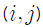
셀의 관측도수를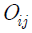
, 귀무가설하에서의 기대도수의 추정치를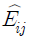
할 때, 이 검정을 위한 검정통계량은?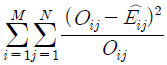
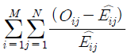
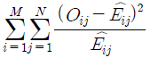
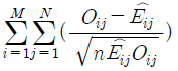
(정답률: 34%)
83. A고등학교 1학년 학생 1000명의 성적분포가 평균 80점, 표준편차 20점인 정규 분포로 나타났다. 이 경우에 60점 이상 100점 이하의 점수를 얻은 학생은 약 몇 명인가?(단, P(Z≤0.5)=0.68, P(Z≤1.0)=0.84, P(Z≤1.5)=0.93, P(Z≤2.0)=0.98)
- 350
- 680
- 790
- 850
(정답률: 39%)
84. 단순선형회귀모형
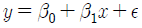
에서 오차항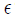
의 분포가 평균이 0이고 분산이 인 정규분포를 따른다고 가정하자. 22개의 자료들로부터 회귀식을 추정하고 나서 잔차제곱합(SSE)을 구하였더니 그 값이 4000이었다. 이 때 분산
인 정규분포를 따른다고 가정하자. 22개의 자료들로부터 회귀식을 추정하고 나서 잔차제곱합(SSE)을 구하였더니 그 값이 4000이었다. 이 때 분산 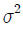
의 불편추정값은?- 100
- 150
- 200
- 250
(정답률: 36%)
85. 평균이 50이고, 표준편차가 10인 어떤 분포에 점수가 10인 6개의 사례가 더 추가되는 경우, 표준편차는 어떻게 변하게 되는가?
- 당초의 표준편차보다 더 커진다.
- 당초의 표준편차보다 더 작아진다.
- 편하지 않는다.
- 판단할 수 없다.
(정답률: 33%)
86. 어떤 화학 반응에서 생성되는 반응량(Y)이 첨가제의 양(X)에 따라 어떻게 변화 하는지를 실험하여 다음과 같은 자료를 얻었다. 변화의 관계를 직선으로 가정하고 최소제곱법에 의하여 회귀직선을 추정할 때 추정된 회귀직선의 절편과 기울기는?
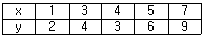
- 절편 0.2, 기울기 1.15
- 절편 1.15, 기울기 0.2
- 절편 0.4, 기울기 1.25
- 절편 1.25, 기울기 0.4
(정답률: 25%)
87. 기록에 의하면 어느 백화점 매장에서 물품을 구입 후 25%의 고객이 신용카드로 결제한다고 알려져 있다. 오늘 40명의 고객이 이 매장에서 물건을 구입하였 다면, 몇 명의 고객이 신용카드로 결제하였을 것이라고 기대되는가?
- 5명
- 8명
- 10명
- 20명
(정답률: 52%)
88. 모집단으로부터 추출된 크기 100의 랜덤표본에서 구한 표본 비율이
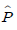
=0.42이다. 귀무가설 H0: P=0.4와 대립가설 H1 : P>0.3을 검정하기 위한 검정통계량은?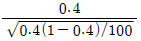
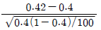
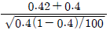
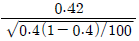
(정답률: 43%)
89.
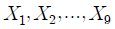
을 정규분포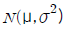
에서 추출한 표본 크기가 9인 확률표본이라 할 때,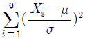
의 확률분포는?- 정규분포
- 자유도가 9인
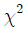
분포 - 자유도가 8인
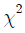
분포 - 자유도가 8인 t 분포
(정답률: 16%)
90. 어느 부서의 사원들 중 대졸 직원은 60명이고, 고졸 직원은 40명이다. 이들 대졸 직원들의 월 평균 급여는 150만원이고, 고졸 직원들의 월 평균 급여는 120만원이다. 이 부서의 전체 사원 100명의 월 평균 급여는?
- 138만원
- 135만원
- 132만원
- 130만원
(정답률: 39%)
91. X 가
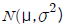
인 분포를 따를 경우 Y=aX+b의 분포는?- 중심극한정리에 의하여 표준정규분포 N(0,1)
- a와 b의 값에 관계없이
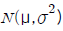
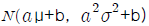
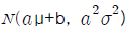
(정답률: 28%)
92. 도시지역과 시골지역의 가족 수의 평균에 차이가 있는지 알아보기 위해 도시지역과 시골지역 중 각각 몇 개의 지역을 골라 가족 수를 조사하였다. 이 사례에 알맞은 검증방법은?
- 독립표본 t-검증
- 더빈 왓슨검증
- X2-검증
- F-검증
(정답률: 36%)
93. 다음 회귀선의 분산분석표는 과외활동 정도가 특정과목의 선호정도에 어떻게 영향을 미치는가에 관한 것이다. 위의 분산분석표에서 결정계수(R2)는?
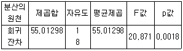
- 0.72
- 0.66
- 0.49
- 0.80
(정답률: 45%)
94. 서울에 거주하는 가구 중에서 명절에 귀향하려는 가구의 비율(p)을 알아보기 위해 500가구를 조사한 결과 100가구가 귀향하겠다고 응답하였다. 서울거주 가구의 귀향비율 p의 95% 신뢰구간은? (단,
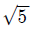
=2.24)- (0.165, 0.235)
- (0.15, 0.25)
- (0.2, 0.235)
- (0.1, 0.3)
(정답률: 27%)
95. 3×4 분할표 자료에 대한 독립성검정을 위한 카이제곱통계량의 자유도는?
- 12
- 10
- 8
- 6
(정답률: 42%)
96. 다음 중 상관분석의 적용을 위해 산점도에서 관찰해야 하는 자료의 특징이 아닌 것은?
- 선형 또는 비선형 관계의 여부
- 이상점의 존재 여부
- 자료의 층화여부
- 원점(0,0)의 통과 여부
(정답률: 41%)
97. 다음 일원배치법모형에서 분산분석을 이용한 분산분석표에 관한 설명으로 틀린 것은?
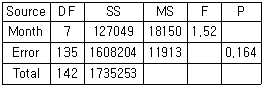
- 총 관측자료수는 142개이다.
- 인자는 Month로서 수준수는 8개이다.
- 유의수준 0.⑤에서 인자의 효과가 인정되지 않는다.
- 오차항의 분산 추정값은 11913이다.
(정답률: 32%)
98. 다음 중 중심극한정리(central limit theorem)에 관한 설명으로 틀린 것은?
- 표본의 크기가 충분히 크다면, 표본의 평균은 0에 가까워진다.
- 표본의 크기가 충분히 크다면, 표본분포의 평균은 모집단의 평균에 접근한다.
- 표본의 크기가 충분히 크다면, 모수(parameter)의 추정이 보다 정확하게 된다.
- 표본의 크기가 충분히 크다면, 평균의 표본분포는 정규분포(normal distribution)에 가까워진다.
(정답률: 32%)
99. 크기가 10인 표본으로부터 얻은 회귀방정식은 y = 2 + 0.3x 이고, x의 표본평균이 2이고, 표본분산은 4, y의 표본평균은 2.6이고 표본분산은 9이다. 이 요약치로부터 x와 y의 상관계수는?
- 0.1
- 0.2
- 0.3
- 0.4
(정답률: 25%)
100. 다음은 중회귀식 = 36.689 + 3.372X1 + 0.532X2 의 회귀계수표이다. ( )안에 들어갈 알맞은 값은?
- A = 1.21, B = 3.59, C= 0.08
- A = 2.65, B = 0.09, C= 9.41
- A = 10.21, B = 36, C= 0.8
- A = 39.69, B = 3.96, C= 26.5
(정답률: 37%)